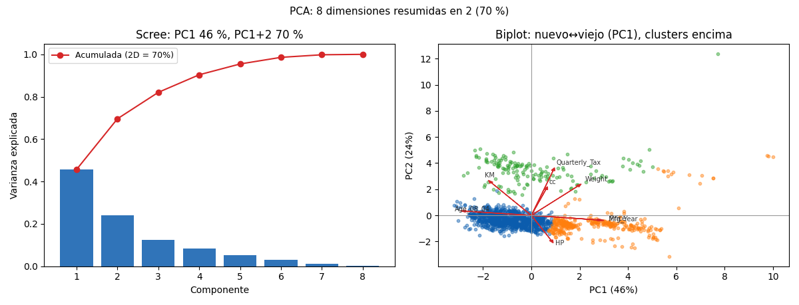

Bloque D · Regresión lineal, selección y regularización · Lección 0032 · mar 29 sep
PCA y biplot: comprimir variables que repiten la historia
Win de hoy: reemplazar 8 variables correlacionadas por 2 componentes que explican el 68 % de la varianza (49 % + 19 %), y leer el biplot: KM y Age apuntan juntas, los 3 clusters se separan solos.
1 · El problema: columnas que cuentan la misma película
Un auto viejo suele tener muchos KM, ser Diesel y tener cilindrada grande:
varias columnas miden casi lo mismo. Si entran todas crudas a un modelo, la información se repite
(los modelos se marean con la
correlación).
PCA
responde: ¿podemos reemplazar 8 variables correlacionadas por 2 componentes que expliquen casi la misma variabilidad?
Condición fundamental: estandarizar primero (StandardScaler), porque
KM (miles) aplastaría a Doors (4 o 5) si comparamos escalas crudas.
En el mapa del Bloque D, esto es la tercera familia de selección (ISL 6.3): después de buscar equipos (0020) y multar coeficientes (0021–0022), la tercera vía es no elegir columnas sino fabricar pocas nuevas que resuman a todas.
2 · Scree plot: ¿cuántas componentes guardar?
Cada componente explica un % de la varianza total. El scree plot muestra ese % ordenado; buscamos el «codo» donde agregar más componentes ya aporta poco.

¿Cómo se lee el
biplot?
Flechas largas = variables importantes; flechas paralelas = variables correlacionadas
(KM y Age apuntan juntas, como vimos en la lección 0023);
puntos cercanos = autos parecidos. Y confirma visualmente los 3 clusters de k-means (colores bien separados).
Regenerar la figura (mismo resultado versionado en assets/img/toyota/):
python3 scripts/make_figures.py --only pca-biplot-pcr3 · Qué significan PC1 y PC2 (las cargas)
Cada componente es una combinación ponderada: PC1 = 0,45·Age + 0,42·KM + ….
Los pesos se llaman
cargas.
Con 8 variables estandarizadas, el ajuste da:
| Componente | Varianza | Cargas dominantes (qué mide) |
|---|---|---|
| PC1 | 49 % | KM (+0,45), Age (+0,44), cc (+0,43) → «desgaste / tamaño» |
| PC2 | 19 % | HP (+0,54), cc (+0,43) → «potencia» |
En palabras: PC1 ordena de «nuevo-chico» a «viejo-grande», PC2 de «poca potencia» a «mucha potencia». Dos números por auto reemplazan razonablemente bien a ocho.
4 · PCA en 10 líneas (reproducí el 49 % / 19 %)
import pandas as pd
from sklearn.preprocessing import StandardScaler
from sklearn.decomposition import PCA
df = pd.read_csv("../ToyotaCorolla.csv")
cols = ["Price","Age_08_04","KM","HP","cc","Doors","Gears","Weight"]
X = df[cols].dropna()
Xs = StandardScaler().fit_transform(X) # ¡siempre estandarizar antes!
p = PCA(n_components=2).fit(Xs)
print(p.explained_variance_ratio_.round(2)) # [0.49 0.19]
print(pd.Series(p.components_[0], index=cols).round(2).sort_values())
Z = p.transform(Xs) # los autos ahora viven en 2D: graficablesTu turno: graficá Z[:,0] vs Z[:,1] coloreando por
Fuel_Type: el diésel se separa solo, sin que PCA haya visto el combustible.
5 · Bonus: PCR, regresión sobre componentes
Podemos usar las componentes como predictores de Price en lugar de las 8 originales: eso es
PCR.
¿Ventaja? Las componentes no están correlacionadas entre sí, así que la
multicolinealidad
desaparece. ¿Costo? Los coeficientes hablan de «PC1» en vez de «KM»: hay que traducirlos de vuelta.
Es la alternativa clásica a Ridge cuando el problema es la correlación entre predictores
(ver lección 0021).
Cuidado: PCA es no supervisado: comprime las X sin mirar Price.
La dirección que mejor predice el precio podría ser PC5, no PC1. Por eso PCR a veces pierde contra Ridge/Lasso,
que sí miran la respuesta.
Pariente moderno: los embeddings (texto, imágenes, recomendadores) son la misma idea —comprimir a pocas dimensiones con sentido— aprendida por redes en vez de álgebra lineal. PCA es el abuelo honesto de todos ellos.
6 · Quiz (auto-chequeo inmediato)
7 · Fuente primaria y cierre
Para profundizar (1 fuente): James et al., An Introduction to Statistical Learning — cap. 12 (PCA) y 6.3 (PCR). Más contexto en RESOURCES.
Orden Bloque D: esta lección cierra el bloque selección/regularización (22–29 sep): stepwise → contracción → PCA/PCR (hoy). Siguiente en cadena numérica: 0033 k-NN (Bloque E).